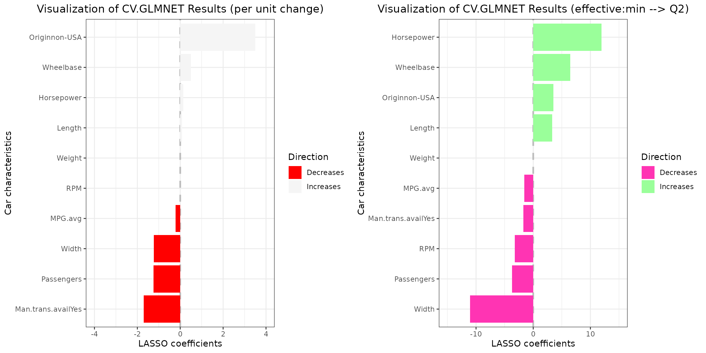

BetaVisualizer
Vadim Tyuryaev1
Aleksandr Tsybakin2
Jane Heffernan3
Hanna Jankowski4
Kevin McGregor5
BetaVisualizer.RmdEXAMPLES
1. LM object
1.1 Data
To assess the impact of automobile design and performance
characteristics on fuel efficiency, measured in miles per gallon
(MPG), we apply our data visualization tool to the
mtcars dataset.
# help(mtcars)
df_mtcars=as.data.frame(mtcars)
df_mtcars[c("cyl","vs","am","gear")] =
lapply(df_mtcars[c("cyl","vs","am","gear")] , factor) # convert to factor
head(df_mtcars)
#> mpg cyl disp hp drat wt qsec vs am gear carb
#> Mazda RX4 21.0 6 160 110 3.90 2.620 16.46 0 1 4 4
#> Mazda RX4 Wag 21.0 6 160 110 3.90 2.875 17.02 0 1 4 4
#> Datsun 710 22.8 4 108 93 3.85 2.320 18.61 1 1 4 1
#> Hornet 4 Drive 21.4 6 258 110 3.08 3.215 19.44 1 0 3 1
#> Hornet Sportabout 18.7 8 360 175 3.15 3.440 17.02 0 0 3 2
#> Valiant 18.1 6 225 105 2.76 3.460 20.22 1 0 3 1
lm_object=lm(mpg~cyl+hp+wt+disp+vs+am+carb,data=df_mtcars)
summary(lm_object)
#>
#> Call:
#> lm(formula = mpg ~ cyl + hp + wt + disp + vs + am + carb, data = df_mtcars)
#>
#> Residuals:
#> Min 1Q Median 3Q Max
#> -3.8806 -1.1961 -0.2563 1.2542 4.6905
#>
#> Coefficients:
#> Estimate Std. Error t value Pr(>|t|)
#> (Intercept) 31.96076 3.66507 8.720 9.47e-09 ***
#> cyl6 -2.57040 1.79214 -1.434 0.1650
#> cyl8 0.20422 3.73915 0.055 0.9569
#> hp -0.04911 0.02456 -2.000 0.0575 .
#> wt -3.16405 1.42802 -2.216 0.0369 *
#> disp 0.01032 0.01570 0.657 0.5176
#> vs1 2.53765 1.97564 1.284 0.2118
#> am1 2.44093 1.68650 1.447 0.1613
#> carb 0.53464 0.76313 0.701 0.4906
#> ---
#> Signif. codes: 0 '***' 0.001 '**' 0.01 '*' 0.05 '.' 0.1 ' ' 1
#>
#> Residual standard error: 2.468 on 23 degrees of freedom
#> Multiple R-squared: 0.8756, Adjusted R-squared: 0.8323
#> F-statistic: 20.23 on 8 and 23 DF, p-value: 1.105e-081.2 Default side-by-side plots
grid.arrange(vis_reg(lm_object)$"SidebySide")It is imperative to acknowledge that variables such as engine
configuration (specifically, the straight engine vs1) and
vehicle weight influence fuel efficiency the most, with the
effect of vs variable remaining consistent when examining
changes in coefficients of continuous variables occurring within
empirical data spanning from the first (Q1) to the third (Q3) quartiles
by default. Nonetheless, a paradigm shift is observed for several other
variables when the analysis transitions from a per-unit change
perspective (as depicted in the left plot) to an examination of
variations between the Q1 and Q3 quartiles (illustrated in the right
plot). Under this new analytical lens, displacement and
horsepower emerge as the third positive and first negative
most influential factors, respectively. This shift in variable
significance can be attributed to the fact that the differences in
displacement and horsepower among the majority of vehicles do not
typically equate to a mere 1 cubic inch or 1 horsepower. Consequently,
this phenomenon underscores the criticality of considering the
distribution of variables in the interpretation of regression outcomes,
as reliance on per-unit interpretations may lead to misconceptions.
1.3 Visualizing per-unit change together with an intercept
vis_reg(lm_object, intercept=T)$"PerUnitVis"1.4 Adding Confidence Intervals (CIs)
vis_reg(lm_object, intercept=T, CI=T)$"PerUnitVis"1.4 Customizing pallete, title, and modifying default realized effect size calculations
grid.arrange(vis_reg(
lm_object, CI=T,palette=c("palegreen4","tomato1"),
eff_size_diff=c(1,5),
title=c(
"Regression - Unit Change",
"Regression - Effective Change (min --> max)"
)
)$"SidebySide"
)1.5 Customizing individual graphs
# obtain coefficients for vs and wt
vline1=lm_object$coefficients['vs1'][[1]]
vline2=lm_object$coefficients['wt'][[1]]
vis_reg(lm_object)$"PerUnitVis"+
geom_hline(yintercept=vline1, linetype="dashed", color = "blue", size=1)+ # add a vertical line
geom_hline(yintercept=vline2, linetype="dashed", color = "orange", size=1)+
ggtitle("Visualization of Regression Results (per unit change)")+
ylim(-5,5)+ # note the coordinate flip
xlab("aspects")+
ylab("coefficients")+
theme_bw()+
scale_fill_manual(values = c("black","pink" ))+ # change mappings
theme(plot.title = element_text(hjust = 0.5)) # place title in the center
#> Scale for fill is already present.
#> Adding another scale for fill, which will replace the existing scale.2. GLM object
We employ the High School and Beyond dataset (hsb) to
visualize the odds of selecting the Academic high school
program. This analysis is based on predictors such as sex, race,
socioeconomic status and scores on several subjects.
2.1 Data and fitted object
# ?hsb
glm_object=glm(
I(prog == "academic") ~ gender +math+ read + write + science + socst,
family = binomial(link="logit"),
data = faraway::hsb)
summary(glm_object)
#>
#> Call:
#> glm(formula = I(prog == "academic") ~ gender + math + read +
#> write + science + socst, family = binomial(link = "logit"),
#> data = faraway::hsb)
#>
#> Coefficients:
#> Estimate Std. Error z value Pr(>|z|)
#> (Intercept) -7.86563 1.33027 -5.913 3.36e-09 ***
#> gendermale 0.25675 0.37566 0.683 0.494314
#> math 0.10454 0.02996 3.490 0.000484 ***
#> read 0.03869 0.02618 1.478 0.139455
#> write 0.03794 0.02767 1.371 0.170272
#> science -0.08102 0.02676 -3.028 0.002460 **
#> socst 0.04908 0.02260 2.172 0.029860 *
#> ---
#> Signif. codes: 0 '***' 0.001 '**' 0.01 '*' 0.05 '.' 0.1 ' ' 1
#>
#> (Dispersion parameter for binomial family taken to be 1)
#>
#> Null deviance: 276.76 on 199 degrees of freedom
#> Residual deviance: 208.87 on 193 degrees of freedom
#> AIC: 222.87
#>
#> Number of Fisher Scoring iterations: 42.2 Default side-by-side plots, CIs and 99% confidence interval
grid.arrange(vis_reg(
glm_object,
CI=T,
alpha=0.01
)$"SidebySide"
)Upon examination of the regression coefficients derived from the
empirical data distribution for a change between Q1 and Q3 for
continuous independent variables, it is evident that the
math score variable exerts the highest impact on the odds
of selecting an academic program as shown on the right plot.
Concurrently, the variable gendermale which predominates in
influence as depicted in the left plot, transitions to the position of
minimal positive impact within this context.
3 GLMNET model objects
3.1. Data
We utilize the LASSO regression to understand how various car characteristics influence sales price using a data set from 93 Cars on Sale in the USA in 1993.
df_glmnet=data.frame(Cars93)
df_glmnet[sample(dim(df_glmnet)[1], 5), ] # examine 5 randomly selected rows
#> Manufacturer Model Type Min.Price Price Max.Price MPG.city
#> 45 Hyundai Elantra Small 9.0 10.0 11.0 22
#> 23 Dodge Colt Small 7.9 9.2 10.6 29
#> 76 Pontiac Grand_Prix Midsize 15.4 18.5 21.6 19
#> 63 Mitsubishi Diamante Midsize 22.4 26.1 29.9 18
#> 47 Hyundai Sonata Midsize 12.4 13.9 15.3 20
#> MPG.highway AirBags DriveTrain Cylinders EngineSize Horsepower RPM
#> 45 29 None Front 4 1.8 124 6000
#> 23 33 None Front 4 1.5 92 6000
#> 76 27 None Front 6 3.4 200 5000
#> 63 24 Driver only Front 6 3.0 202 6000
#> 47 27 None Front 4 2.0 128 6000
#> Rev.per.mile Man.trans.avail Fuel.tank.capacity Passengers Length Wheelbase
#> 45 2745 Yes 13.7 5 172 98
#> 23 3285 Yes 13.2 5 174 98
#> 76 1890 Yes 16.5 5 195 108
#> 63 2210 No 19.0 5 190 107
#> 47 2335 Yes 17.2 5 184 104
#> Width Turn.circle Rear.seat.room Luggage.room Weight Origin
#> 45 66 36 28.0 12 2620 non-USA
#> 23 66 32 26.5 11 2270 USA
#> 76 72 41 28.5 16 3450 USA
#> 63 70 43 27.5 14 3730 non-USA
#> 47 69 41 31.0 14 2885 non-USA
#> Make
#> 45 Hyundai Elantra
#> 23 Dodge Colt
#> 76 Pontiac Grand_Prix
#> 63 Mitsubishi Diamante
#> 47 Hyundai Sonata
levels(df_glmnet$Origin) # check level attributes
#> [1] "USA" "non-USA"
df_glmnet=df_glmnet %>% mutate(MPG.avg = (MPG.city + MPG.highway) / 2) # calculate average MPG3.2 LASSO - data preparation and model
y_lasso=df_glmnet$Price
x_lasso=model.matrix(
as.formula(paste("~",
paste(c("MPG.avg","Horsepower","RPM","Wheelbase",
"Passengers","Length", "Width", "Weight",
"Origin","Man.trans.avail"
), collapse = "+"
),sep = ""
)
), data=df_glmnet
)
x_lasso = x_lasso[, -1] # remove intercept
ndim_lasso=dim(x_lasso)[1]
cv_model_lasso = cv.glmnet(x_lasso, y_lasso, family="gaussian", alpha=1) # LASSO regression
# extract value of lambda that gives minimum mean cross-validated error
best_lambda_lasso = cv_model_lasso$lambda.min
plot(cv_model_lasso)
best_model_lasso = glmnet(x_lasso, y_lasso, family="gaussian", alpha=1,
lambda=best_lambda_lasso)
coefficients(best_model_lasso)
#> 11 x 1 sparse Matrix of class "dgCMatrix"
#> s0
#> (Intercept) 41.95022623
#> MPG.avg -0.22248811
#> Horsepower 0.14052097
#> RPM -0.00231447
#> Wheelbase 0.49693874
#> Passengers -1.24284515
#> Length 0.07883149
#> Width -1.22607113
#> Weight .
#> Originnon-USA 3.50458209
#> Man.trans.availYes -1.70340278Note that on Lasso regression plots two values of regularization parameter are indicated: and . What is the difference? The first, is the value that minimizes the cross-validated error, leading to a model that fits the data with the lowest prediction error, but with a potential risk of overfitting. Conversely,. is a more conservative choice, representing the largest within one standard error of the minimum error, resulting in a simpler, more robust model that is less likely to overfit while maintaining a prediction error close to the minimum. For our analysis we select .
The LASSO regression has reduced the coefficient for the
weight variable to zero, likely due to its high correlation
with other variables included in the analysis.
3.3 Checking correlations for numeric variables of interest
df_glmnet_num=df_glmnet%>%select_if(function(x) is.numeric(x))
cols_to_select = c("MPG.avg","Horsepower","RPM","Wheelbase","Passengers",
"Length", "Width", "Weight")
df_glmnet_num=df_glmnet_num %>%select(all_of(cols_to_select))
corPlot(df_glmnet_num,xlas=2)The correlation matrix substantiates our hypothesis, revealing a high correlation between weight and multiple variables incorporated in the model.
3.4 Default LASSO plots with custom realized effect size
grid.arrange(vis_reg(best_model_lasso,eff_size_diff=c(1,3), # Q2 - minimum
glmnet_fct_var="Originnon-USA")$"SidebySide") # note the naming pattern for categorical variablesNote that the Weight variable is retained and remains
consistently equal to
across both plots. Additionally, the variation in regression
coefficients and their interpretation align with the paradigm change
discussed previously.
3.5 Modifying idividial plots and arraning them back together
plt_1=vis_reg(best_model_lasso,eff_size_diff=c(1,3),
glmnet_fct_var="Originnon-USA")$"PerUnitVis"+
ggtitle("Visualization of CV.GLMNET Results (per unit change)")+
ylim(-4,4)+
xlab("Car characteristics")+
ylab("LASSO coefficients")+
theme_bw()+
scale_fill_manual(values = c("red","whitesmoke" ))+
theme(plot.title = element_text(hjust = 0.5))
#> Scale for fill is already present.
#> Adding another scale for fill, which will replace the existing scale.
plt_2=vis_reg(best_model_lasso, eff_size_diff=c(1,3),
glmnet_fct_var="Originnon-USA")$"RealizedEffectVis"+
ggtitle("Visualization of CV.GLMNET Results (effective:min --> Q2)")+
ylim(-15,15)+
xlab("Car characteristics")+
ylab("LASSO coefficients")+
theme_bw()+
scale_fill_manual(values = c("maroon1","palegreen1" ))+
theme(plot.title = element_text(hjust = 0.5))
#> Scale for fill is already present.
#> Adding another scale for fill, which will replace the existing scale.
plt_3=arrangeGrob(plt_1,plt_2, nrow=1, widths = c(1,1))
grid.arrange(plt_3)
Note that coefficients with absolute values exceeding those specified
in the ylim vector will not be visualized. For instance,
setting ylim=c(-2,2) for the left plot would result in the
omission of the Originnon-USA coefficient from the
visualization.
3.6.1 Data
We employ the Stanford Heart Transplant data (jasa)
which bcontains detailed records of heart transplant patients, including
their survival times, status, and other clinical variables, used for
survival analysis to demonstrate the construction of CIs for
glmnet type objects.
# ?jasa
heart_df=as.data.frame(survival::jasa)
heart_df_filtered = heart_df %>%filter(!rowSums(is.na(.))) # remove rows containing NaN values
# check last 6 rows of the data frame
tail(heart_df_filtered)
#> birth.dt accept.dt tx.date fu.date fustat surgery age futime
#> 93 1925-10-10 1973-07-11 1973-08-07 1974-04-01 0 0 47.75086 264
#> 94 1929-11-11 1973-09-14 1973-09-17 1974-02-25 1 1 43.84120 164
#> 96 1947-02-09 1973-10-04 1973-10-16 1974-04-01 0 0 26.65024 179
#> 97 1950-04-11 1973-11-22 1973-12-12 1974-04-01 0 0 23.61670 130
#> 98 1945-04-28 1973-12-14 1974-03-19 1974-04-01 0 0 28.62971 108
#> 100 1939-01-31 1974-02-22 1974-03-31 1974-04-01 0 1 35.06092 38
#> wait.time transplant mismatch hla.a2 mscore reject
#> 93 27 1 2 0 0.33 0
#> 94 3 1 3 0 1.20 1
#> 96 12 1 2 0 0.46 0
#> 97 20 1 3 1 1.78 0
#> 98 95 1 4 1 0.77 0
#> 100 37 1 3 0 0.67 03.6.2 Data observations
# filtered data only contains patients who received a transplant,
sum(heart_df_filtered$transplant!=1)
#> [1] 0
# mismatch scores are weakly correlated,
print('Correlation between mismatch scores:')
#> [1] "Correlation between mismatch scores:"
cor(heart_df_filtered$mscore,heart_df_filtered$mismatch)
#> [1] 0.3881104
# if rejection occurs, the death is certain, at least, in this data set
heart_cont_table=table(heart_df_filtered$reject,heart_df_filtered$fustat)
dimnames(heart_cont_table) =list(
Reject = c("No", "Yes"),
Status = c("Alive", "Deceased")
)
heart_cont_table
#> Status
#> Reject Alive Deceased
#> No 24 12
#> Yes 0 29
# 'age' is skewed variable with a very big range
paste("Range of '\ age \' variable is : ",diff(range(heart_df_filtered$age)))
#> [1] "Range of ' age ' variable is : 44.8569472963724"
par(mfrow=c(2,2))
hist(heart_df_filtered$age, main="Histogram of Age", xlab="age")
boxplot(heart_df_filtered$age,main="Boxplot of Age", ylab="age")
hist(sqrt(heart_df_filtered$age),main="Histogram of transformed data", xlab="Sqrt(age)")
boxplot(sqrt(heart_df_filtered$age),main="Boxplot of transformed data", ylab="Sqrt(age)")3.6.3 A note about rounding
# observe that age variable is not rounded
# it is calculated in the following manner
age_calc_example=difftime(heart_df_filtered$accept.dt,
heart_df_filtered$birth.dt,units = "days")/365.25
# check the first calculated value
age_calc_example[1]==heart_df_filtered[1,]$age
#> [1] TRUE
# check randomly selected value
n_samp=sample(dim(heart_df_filtered)[1],1)
age_calc_example[n_samp]==heart_df_filtered[n_samp,]$age
#> [1] TRUE
# check 5 point summary
heart_df_filtered$age%>%summary()
#> Min. 1st Qu. Median Mean 3rd Qu. Max.
#> 19.55 42.50 48.02 46.03 52.08 64.41
# check 5 point summary for data rounded down to the nearest integer
heart_df_filtered$age%>%floor()%>%summary()
#> Min. 1st Qu. Median Mean 3rd Qu. Max.
#> 19.00 42.00 48.00 45.54 52.00 64.00In the realm of our visualization tool, two primary inquiries emerge:
*How does the Odds Ratio (OR) change with a unit increment in the variables under scrutiny?
*How does the OR vary in response to alterations exceeding a single unit, such as the disparity between the first (Q1) and third (Q3) quartiles within the data distribution?
It is crucial to acknowledge that the data distribution may not
always support a per-unit interpretation, as exemplified by the
age variable within our dataset. Consequently, when
engaging in calculations that encompass changes across quartiles, it is
advisable to employ rounding strategies (either floor or ceiling
functions) prior to data input. This approach facilitates the comparison
of ORs associated with unit age discrepancies (e.g., 1 year) against
those pertaining to more substantial differences (e.g., 10 years).
Absence of rounding can lead to nuanced interpretations. Consider,
for instance, the interquartile range for the age variable,
which is calculated as Q3 - Q1 (52.08 - 42.50 = 9.58 years). In such
scenarios, the OR derived from the Q3 to Q1 variation in
age essentially compares the odds of mortality among
individuals with an age gap of 9.58 years, a differential that may not
intuitively serve as the most illustrative measure. In the
vis_reg() function, the round_func parameter
allows for the specification of rounding the calculated differences
either upwards or downwards to the nearest integer, thus providing a
more instinctual explication.
3.6.4 Model
# reject categorical variable in not included due to the reason previously stated
heart_df_filtered = heart_df_filtered %>%
mutate(across(all_of(c("surgery")), as.factor))
# apply 'sqrt()' transformation to 'age' variable
heart_df_filtered$sqrt.age=sqrt(heart_df_filtered$age)
y_heart=heart_df_filtered$fustat
x_heart=model.matrix(as.formula(paste("~",
paste(c("sqrt.age" ,"mismatch","mscore", "surgery"),collapse = "+"),
sep = "")), data=heart_df_filtered)
x_heart=x_heart[, -1]
x_heart_orig=x_heart # save original data set
x_heart=scale(x_heart,T,T)
gfit_heart = cv.glmnet(x_heart,y_heart,standardize=F,family="binomial")
lambda_heart=gfit_heart$lambda.min
n_heart=dim(x_heart)[1]
beta_hat_heart=coef(gfit_heart, x=x_heart, y=y_heart, s=lambda_heart, exact=T)
# note that lambda should be multiplied by the number of rows
out_heart = fixedLassoInf(x_heart,y_heart,beta_hat_heart,lambda_heart*n_heart,
family="binomial")
#check the output
out_heart
#>
#> Call:
#> fixedLassoInf(x = x_heart, y = y_heart, beta = beta_hat_heart,
#> lambda = lambda_heart * n_heart, family = "binomial")
#>
#> Testing results at lambda = 1.336, with alpha = 0.100
#>
#> Var Coef Z-score P-value LowConfPt UpConfPt LowTailArea UpTailArea
#> 1 0.811 2.738 0.009 0.269 1.302 0.048 0.049
#> 2 -0.514 -1.681 0.172 -1.008 0.415 0.050 0.049
#> 3 0.497 1.487 0.232 -0.624 1.033 0.049 0.049
#> 4 -0.430 -1.605 0.149 -0.867 0.276 0.050 0.050
#>
#> Note: coefficients shown are full regression coefficients
# note the class
class(out_heart)
#> [1] "fixedLogitLassoInf"Although the data input is centered and scaled, the coefficients and
CIs are presented on the original scale. The package includes a function
named detransform that carries out the re-scaling and
de-centering process for effective size difference calculations.
Alternatively, consider rounding down or up before passing the data to
the function.
3.6.5 A note on data scaling and centering in relation to
glmnet objects
# back transformation logic
x_heart_reconstructed = t(apply(x_heart, 1, function(x)
x*attr(x_heart,'scaled:scale') + attr(x_heart, 'scaled:center')))
# check
all.equal(x_heart_orig,x_heart_reconstructed)
#> [1] TRUE
# same via a function
x_heart_reconstructed.2=detransform(x_heart)
all.equal(x_heart_orig,x_heart_reconstructed.2)
#> [1] TRUE3.6.6 LASSO regression with CIs and custom realized effect size
grid.arrange(vis_reg(out_heart, CI=T, glmnet_fct_var=c("surgery1"),
round_func="none",eff_size_diff=c(1,3))$"SidebySide"
)3.6.7 A note on Selective Inference
In the domain of Selective Inference, it is noteworthy that CIs may not encompass the estimated coefficients. To elucidate, scenarios may arise wherein both bounds of the confidence intervals are positioned beneath the estimated coefficients. The following example is reproduced without any changes from “Tools for Post-Selection Inference” (pp.9-10).
set.seed(43)
n = 50
p = 10
sigma = 1
x = matrix(rnorm(n*p),n,p)
x=scale(x,TRUE,TRUE)
beta = c(3,2,rep(0,p-2))
y = x%*%beta + sigma*rnorm(n)
pf=c(rep(1,7),rep(.1,3)) #define penalty factors
pf=p*pf/sum(pf) # penalty factors should be rescaled so they sum to p
xs=scale(x,FALSE,pf) #scale cols of x by penalty factors
# first run glmnet
gfit = glmnet(xs, y, standardize=FALSE)
# extract coef for a given lambda; note the 1/n factor!
# (and we don't save the intercept term)
lambda = .8
beta_hat = coef(gfit, x=xs, y=y, s=lambda/n, exact=TRUE)[-1]
# compute fixed lambda p-values and selection intervals
out = fixedLassoInf(xs,y,beta_hat,lambda,sigma=sigma)
#rescale conf points to undo the penalty factor
out$ci=t(scale(t(out$ci),FALSE,pf[out$vars]))
out
#>
#> Call:
#> fixedLassoInf(x = xs, y = y, beta = beta_hat, lambda = lambda,
#> sigma = sigma)
#>
#> Standard deviation of noise (specified or estimated) sigma = 1.000
#>
#> Testing results at lambda = 0.800, with alpha = 0.100
#>
#> Var Coef Z-score P-value LowConfPt UpConfPt LowTailArea UpTailArea
#> 1 3.987 18.880 0.000 2.657 3.229 0.049 0.050
#> 2 2.911 13.765 0.000 1.454 2.364 0.050 0.049
#> 3 0.187 0.776 0.303 -0.747 1.671 0.050 0.050
#> 4 0.149 0.695 0.625 -1.040 0.353 0.050 0.049
#> 5 -0.294 -1.221 0.743 -0.379 2.681 0.050 0.050
#> 6 -0.206 -0.978 0.685 -0.349 1.568 0.049 0.050
#> 7 0.195 0.914 0.407 -0.487 0.401 0.049 0.049
#> 8 0.006 0.295 0.758 -1.711 0.363 0.050 0.049
#> 9 -0.015 -0.723 0.458 -0.368 0.531 0.050 0.050
#> 10 -0.003 -0.157 0.948 -0.011 7.828 0.050 0.050
#>
#> Note: coefficients shown are partial regression coefficientsNote that confidence intervals for the first two variables contain
the true values c(3,2) and do not
encompass the estimated coefficients
c(3.987,2.911).
3.6.7 GLMNET with penalty factor and CIs
pf_heart=c(0.3, 0.1,0.1,0.1)
p_l=length(pf_heart)
pf_heart=p_l*pf_heart/sum(pf_heart)
xs_heart_res=scale(x_heart,FALSE,pf_heart) # note that the data is being scaled again
gfit_heart_pef_fac_res = cv.glmnet(xs_heart_res, y_heart, standardize=FALSE,
family="binomial")
lambda_heart_pef_fac_res=gfit_heart_pef_fac_res$lambda.min
beta_hat_heart_res=coef(gfit_heart_pef_fac_res, x=xs_heart_res, y=y_heart,
s=lambda_heart_pef_fac_res, exact=F)
out_heart_res = fixedLassoInf(xs_heart_res,y_heart,beta_hat_heart_res,
lambda_heart_pef_fac_res*n_heart,family="binomial")
out_heart_res$ci=t(scale(t(out_heart_res$ci),FALSE,pf_heart[out_heart_res$vars]))
out_heart_res
#>
#> Call:
#> fixedLassoInf(x = xs_heart_res, y = y_heart, beta = beta_hat_heart_res,
#> lambda = lambda_heart_pef_fac_res * n_heart, family = "binomial")
#>
#> Testing results at lambda = 0.877, with alpha = 0.100
#>
#> Var Coef Z-score P-value LowConfPt UpConfPt LowTailArea UpTailArea
#> 1 1.630 2.774 0.009 0.273 1.304 0.050 0.048
#> 2 -0.351 -1.690 0.121 -1.038 0.244 0.049 0.049
#> 3 0.342 1.491 0.167 -0.397 1.078 0.049 0.049
#> 4 -0.291 -1.608 0.127 -0.884 0.219 0.049 0.050
#>
#> Note: coefficients shown are full regression coefficients3.6.8 A second note on data scaling and centering in relation to
fixedLassoInf objects
x_heart_test_3=detransform(xs_heart_res, attr_center=NULL)
x_heart_test_3=detransform(x_heart_test_3,
attr_scale=attr(x_heart, 'scaled:scale'),
attr_center=attr(x_heart, 'scaled:center')
)
# check
all.equal(x_heart_test_3,x_heart_orig)
#> [1] TRUEThe vis_reg() function operates by extracting the
necessary information from the provided object. However, in the context
of generating CIS with penalty factors for fixedLassoInf
type objects, a dual transformation, as illustrated previously, is
necessary. Direct reconstruction from the passed object is not possible
in such instances. Therefore, to obtain CIs for
fixedLassoInf objects that have been fitted using penalty
factors, it is essential to supply the original, non-transformed
data.
3.6.9 Post selection inference with CIs and penalty factors
# note that case_penalty=T and x_data_orig must be specified
# effective change between Q1(2) and max(5)
grid.arrange(vis_reg(out_heart_res, CI=T, glmnet_fct_var=c("surgery1"),
case_penalty=T, x_data_orig=x_heart_orig,
eff_size_diff=c(2,5))$"SidebySide")It is important to observe that when the computed effective size
difference is below 1, such would have been the case if we utilized
default Q3 - Q1 difference which is 7.217 - 6.519 = 0.698 ( see
summary(heart_df_filtered$sqrt.age) ), the OR on the right
plot would correspond to a change of less than one
unit. As a result, the numerical values presented on the right plot
would be lower than those on the left plot. This outcome may appear
counter intuitive at first glance.